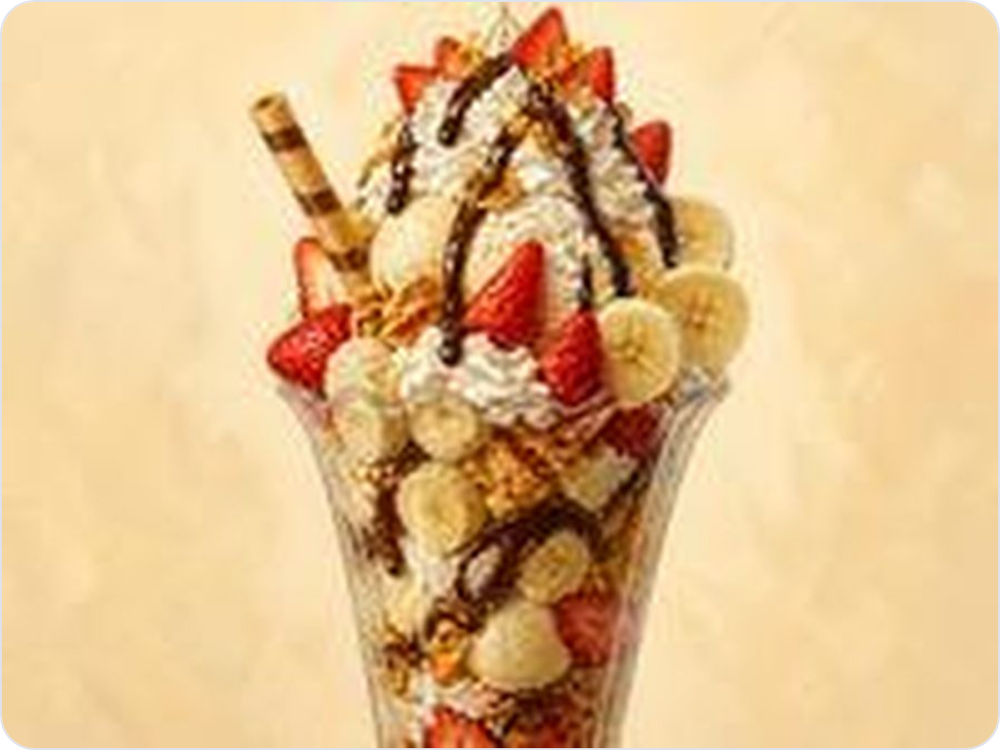
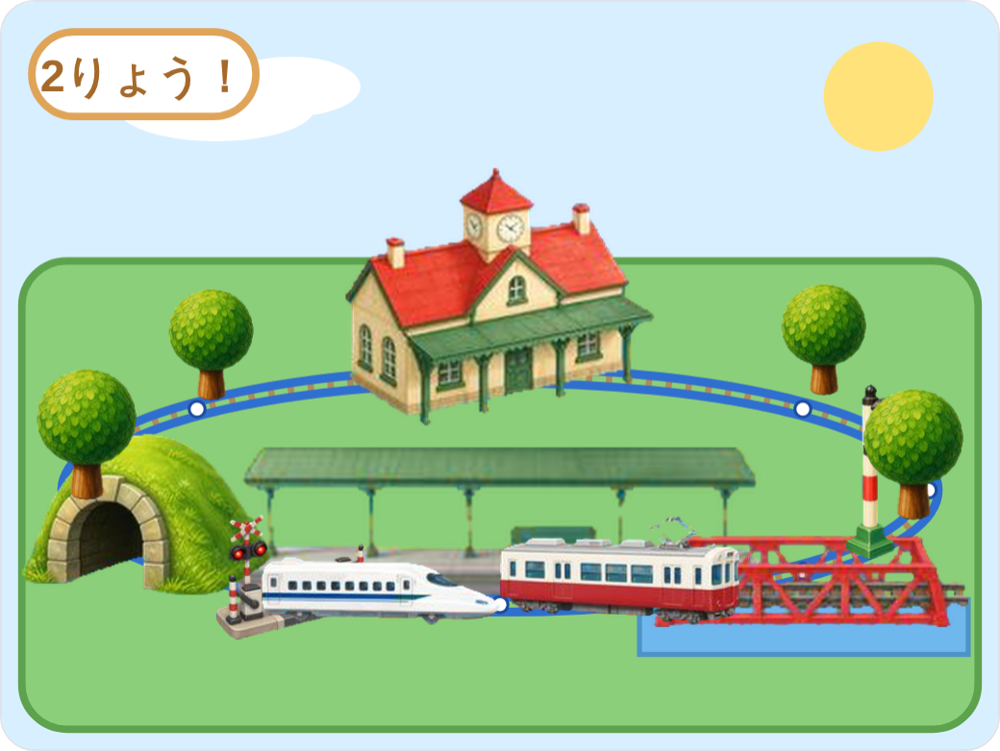
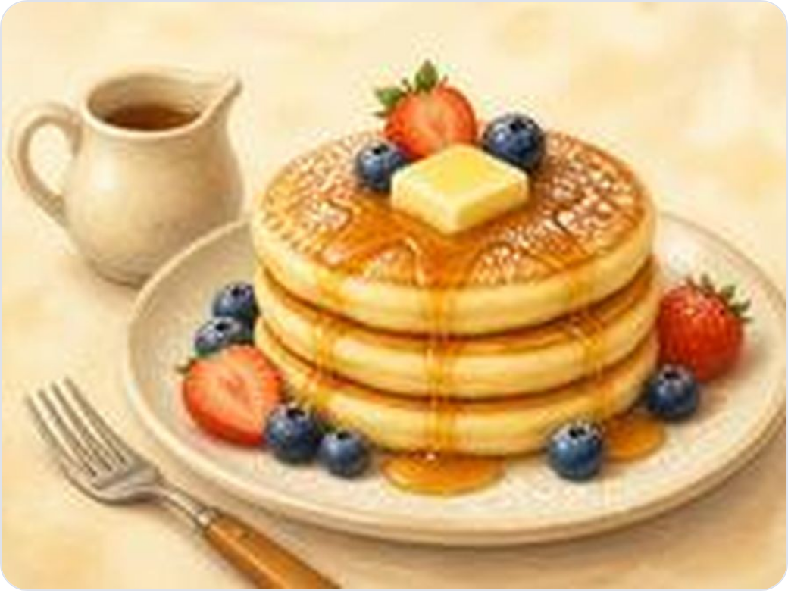
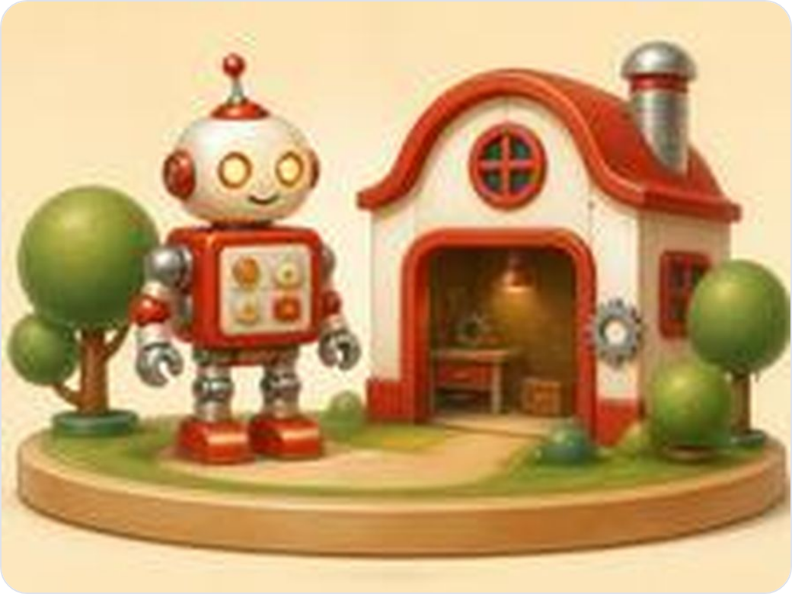
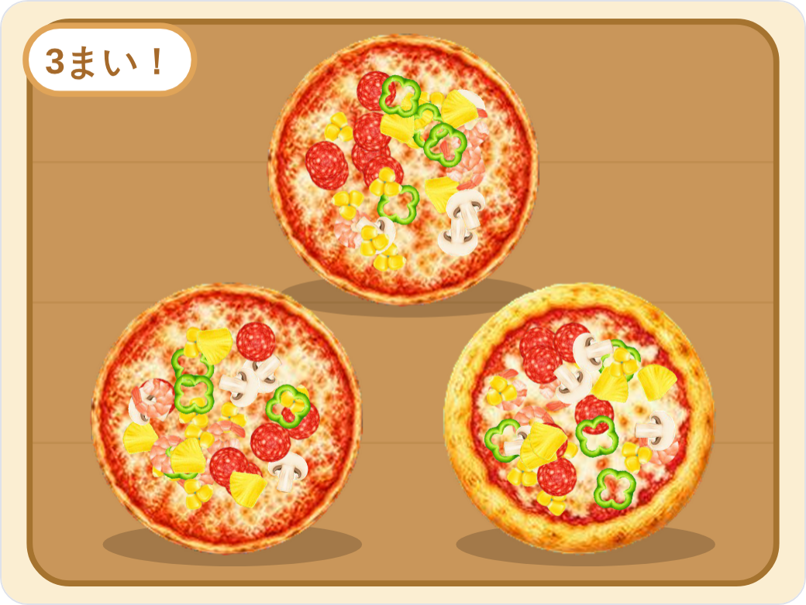
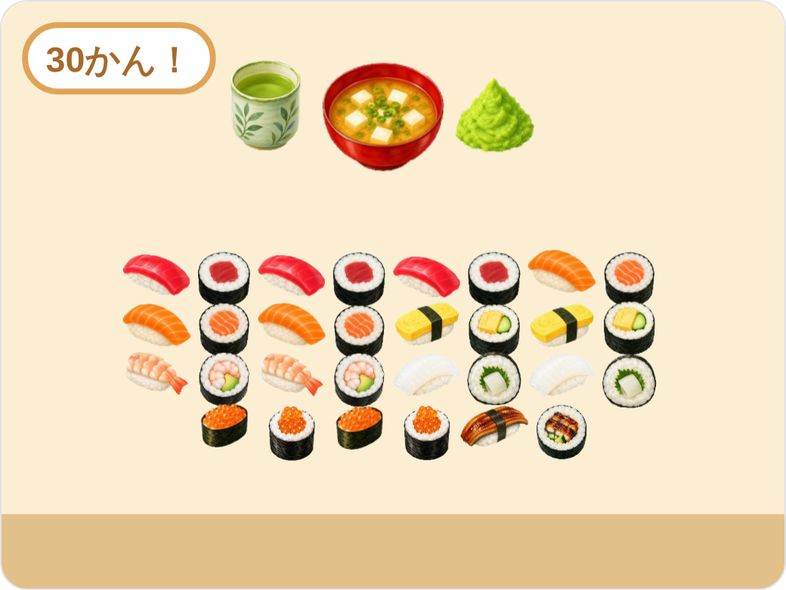
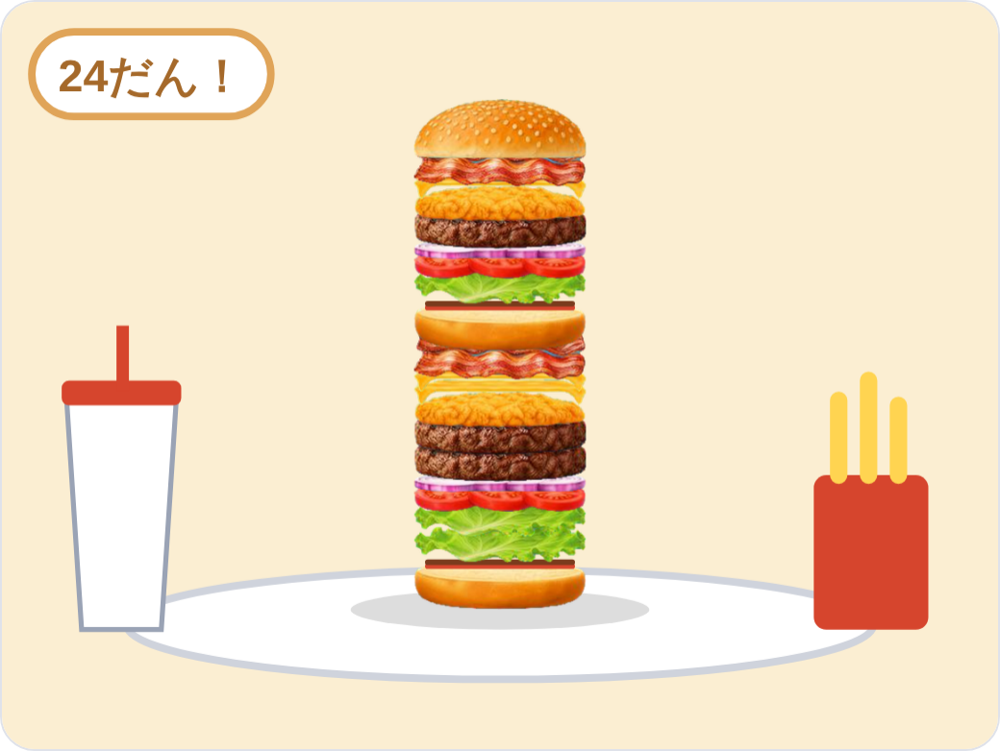
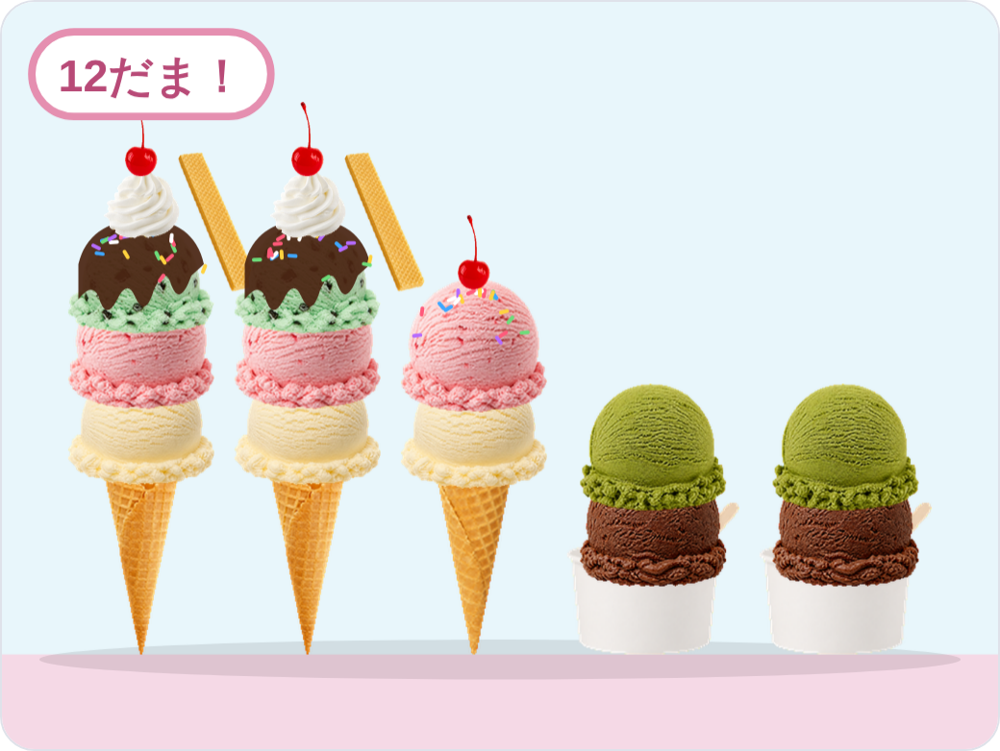
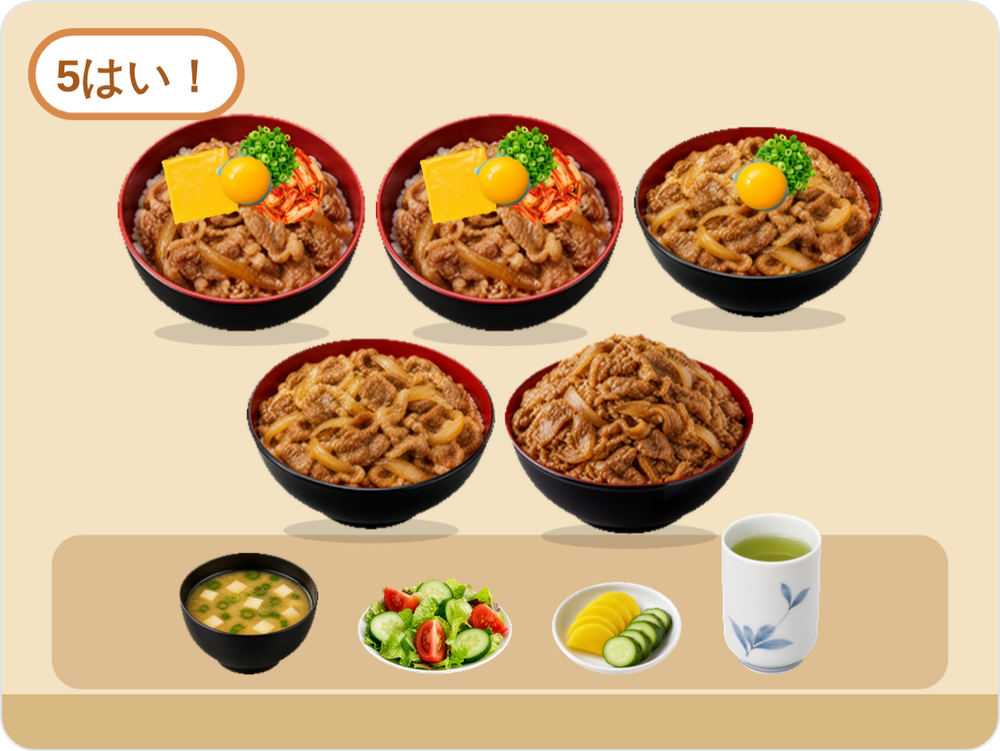
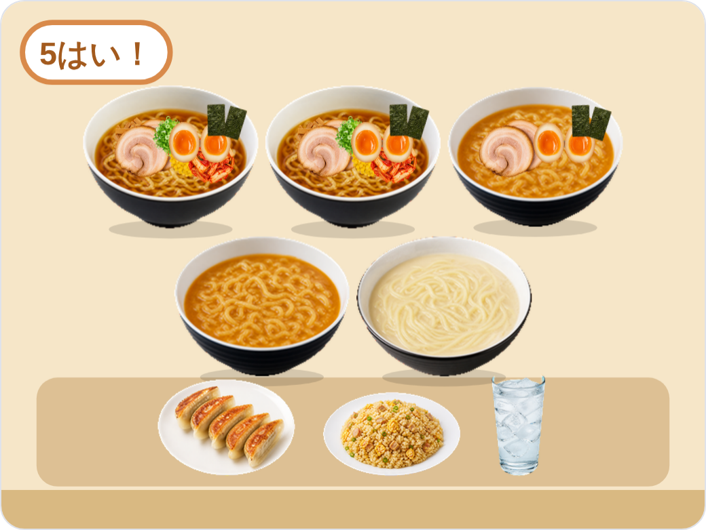

おこづかい5,000えんカレーの かいもの。かごに はいっている ものの きんがくを けいさんしよう！
1かけざん 1この ねだん × かず ＝ きんがく（10もん）
とりにく250 × 2 ＝えん
ぎゅうにく400 × 1 ＝えん
にんじん80 × 3 ＝えん
じゃがいも100 × 3 ＝えん
たまねぎ90 × 2 ＝えん
ピーマン70 × 2 ＝えん
あまくちルウ200 × 2 ＝えん
ごはん150 × 3 ＝えん
ゆでたまご60 × 2 ＝えん
チーズ120 × 2 ＝えん
2たしざん① 1〜6ばんめの こたえを たそう
＋＋＋＋＋＝えん
3たしざん② ぜんぶの きんがくを たして ごうけいを だそう（10こ）
＋＋＋＋＋＋＋＋＋＝えん
4ひきざん① おつりは いくら？
おこづかいは 5,000えんです。おかいけいは 2,970えんでした。おつりは いくらですか。
5,000 － 2,970 ＝えん
5ひきざん② 1つ へらすと？
とりにく（1こ 250えん）を 1こ へらします。
ごうけい：2,970 － 250 ＝えん
おつり：5,000 － ＝えん
6わりざん① わりかん
ごうけい 2,970えんを、5にんで おなじ きんがくずつ はらいます。ひとり いくらですか。
2,970 ÷ 5 ＝えん
7わりざん② あと なんこ かえる？
おつりは 2,030えんです。ぶたにく（1こ 300えん）は、あと なんこ かえますか。あまりは いくらですか。
2,030 ÷ 300 ＝こ あまりえん
8かけざん・くらべる おなじ かいものを もう 1かい したら？
ごうけい 2,970えんの かいものを 2かい すると、ぜんぶで いくらですか。おこづかい 5,000えんで たりますか。
2,970 × 2 ＝えんたりる？○×
おこづかい5,000えんパフェの かいもの。かごに はいっている ものの きんがくを けいさんしよう！
1かけざん 1この ねだん × かず ＝ きんがく（10もん）
ジャンボグラス250 × 2 ＝えん
コーンフレーク100 × 2 ＝えん
バニラ130 × 2 ＝えん
チョコ130 × 2 ＝えん
いちご200 × 3 ＝えん
バナナ100 × 2 ＝えん
ホイップ120 × 2 ＝えん
カスタード100 × 2 ＝えん
チョコソース60 × 2 ＝えん
ウエハース80 × 2 ＝えん
2たしざん① 1〜6ばんめの こたえを たそう
＋＋＋＋＋＝えん
3たしざん② ぜんぶの きんがくを たして ごうけいを だそう（10こ）
＋＋＋＋＋＋＋＋＋＝えん
4ひきざん① おつりは いくら？
おこづかいは 5,000えんです。おかいけいは 2,740えんでした。おつりは いくらですか。
5,000 － 2,740 ＝えん
5ひきざん② 1つ へらすと？
いちご（1こ 200えん）を 1こ へらします。
ごうけい：2,740 － 200 ＝えん
おつり：5,000 － ＝えん
6わりざん① わりかん
ごうけい 2,740えんを、2にんで おなじ きんがくずつ はらいます。ひとり いくらですか。
2,740 ÷ 2 ＝えん
7わりざん② あと なんこ かえる？
おつりは 2,260えんです。ジャンボグラス（1こ 250えん）は、あと なんこ かえますか。あまりは いくらですか。
2,260 ÷ 250 ＝こ あまりえん
8かけざん・くらべる おなじ かいものを もう 1かい したら？
ごうけい 2,740えんの かいものを 2かい すると、ぜんぶで いくらですか。おこづかい 5,000えんで たりますか。
2,740 × 2 ＝えんたりる？○×
おこづかい5,000えんプラレールの えきの かいもの。かごに はいっている ものの きんがくを けいさんしよう！
1かけざん 1この ねだん × かず ＝ きんがく（11もん）
まっすぐレール80 × 4 ＝えん
カーブレール100 × 4 ＝えん
えきしゃ300 × 1 ＝えん
ホーム200 × 2 ＝えん
しんかんせん400 × 1 ＝えん
京阪電車350 × 1 ＝えん
ふみきり150 × 2 ＝えん
トンネル250 × 2 ＝えん
木40 × 4 ＝えん
しんごう80 × 2 ＝えん
はし200 × 1 ＝えん
2たしざん① 1〜6ばんめの こたえを たそう
＋＋＋＋＋＝えん
3たしざん② ぜんぶの きんがくを たして ごうけいを だそう（11こ）
＋＋＋＋＋＋＋＋＋＋＝えん
4ひきざん① おつりは いくら？
おこづかいは 5,000えんです。おかいけいは 3,490えんでした。おつりは いくらですか。
5,000 － 3,490 ＝えん
5ひきざん② 1つ へらすと？
トンネル（1こ 250えん）を 1こ へらします。
ごうけい：3,490 － 250 ＝えん
おつり：5,000 － ＝えん
6わりざん① わりかん
ごうけい 3,490えんを、5にんで おなじ きんがくずつ はらいます。ひとり いくらですか。
3,490 ÷ 5 ＝えん
7わりざん② あと なんこ かえる？
おつりは 1,510えんです。えきしゃ（1こ 300えん）は、あと なんこ かえますか。あまりは いくらですか。
1,510 ÷ 300 ＝こ あまりえん
8かけざん・くらべる おなじ かいものを もう 1かい したら？
ごうけい 3,490えんの かいものを 2かい すると、ぜんぶで いくらですか。おこづかい 5,000えんで たりますか。
3,490 × 2 ＝えんたりる？○×
おこづかい5,000えんカスタムカーの かいもの。かごに はいっている ものの きんがくを けいさんしよう！
1かけざん 1この ねだん × かず ＝ きんがく（10もん）
スポーツカー350 × 1 ＝えん
あかいペンキ50 × 2 ＝えん
くろいペンキ60 × 1 ＝えん
ふつうのタイヤ80 × 4 ＝えん
ピカピカホイール150 × 2 ＝えん
ウイング120 × 2 ＝えん
ライト80 × 3 ＝えん
ステッカー40 × 4 ＝えん
マフラー100 × 2 ＝えん
ネオン130 × 2 ＝えん
2たしざん① 1〜6ばんめの こたえを たそう
＋＋＋＋＋＝えん
3たしざん② ぜんぶの きんがくを たして ごうけいを だそう（10こ）
＋＋＋＋＋＋＋＋＋＝えん
4ひきざん① おつりは いくら？
おこづかいは 5,000えんです。おかいけいは 2,230えんでした。おつりは いくらですか。
5,000 － 2,230 ＝えん
5ひきざん② 1つ へらすと？
スポーツカー（1こ 350えん）を 1こ へらします。
ごうけい：2,230 － 350 ＝えん
おつり：5,000 － ＝えん
6わりざん① わりかん
ごうけい 2,230えんを、5にんで おなじ きんがくずつ はらいます。ひとり いくらですか。
2,230 ÷ 5 ＝えん
7わりざん② あと なんこ かえる？
おつりは 2,770えんです。トラック（1こ 300えん）は、あと なんこ かえますか。あまりは いくらですか。
2,770 ÷ 300 ＝こ あまりえん
8かけざん・くらべる おなじ かいものを もう 1かい したら？
ごうけい 2,230えんの かいものを 2かい すると、ぜんぶで いくらですか。おこづかい 5,000えんで たりますか。
2,230 × 2 ＝えんたりる？○×
おこづかい5,000えんパンケーキの かいもの。かごに はいっている ものの きんがくを けいさんしよう！
1かけざん 1この ねだん × かず ＝ きんがく（10もん）
ふつうのパンケーキ200 × 3 ＝えん
スフレパンケーキ300 × 1 ＝えん
メープル80 × 2 ＝えん
はちみつ90 × 2 ＝えん
いちご200 × 3 ＝えん
バナナ100 × 2 ＝えん
ブルーベリー180 × 2 ＝えん
バター50 × 3 ＝えん
ホイップ120 × 2 ＝えん
アイス130 × 2 ＝えん
2たしざん① 1〜6ばんめの こたえを たそう
＋＋＋＋＋＝えん
3たしざん② ぜんぶの きんがくを たして ごうけいを だそう（10こ）
＋＋＋＋＋＋＋＋＋＝えん
4ひきざん① おつりは いくら？
おこづかいは 5,000えんです。おかいけいは 3,050えんでした。おつりは いくらですか。
5,000 － 3,050 ＝えん
5ひきざん② 1つ へらすと？
ふつうのパンケーキ（1こ 200えん）を 1こ へらします。
ごうけい：3,050 － 200 ＝えん
おつり：5,000 － ＝えん
6わりざん① わりかん
ごうけい 3,050えんを、2にんで おなじ きんがくずつ はらいます。ひとり いくらですか。
3,050 ÷ 2 ＝えん
7わりざん② あと なんこ かえる？
おつりは 1,950えんです。スフレパンケーキ（1こ 300えん）は、あと なんこ かえますか。あまりは いくらですか。
1,950 ÷ 300 ＝こ あまりえん
8かけざん・くらべる おなじ かいものを もう 1かい したら？
ごうけい 3,050えんの かいものを 2かい すると、ぜんぶで いくらですか。おこづかい 5,000えんで たりますか。
3,050 × 2 ＝えんたりる？○×
おこづかい5,000えんロボットの かいもの。かごに はいっている ものの きんがくを けいさんしよう！
1かけざん 1この ねだん × かず ＝ きんがく（11もん）
あるくロボ350 × 1 ＝えん
はしるロボ250 × 1 ＝えん
あかいペンキ50 × 2 ＝えん
ぎんいろのペンキ70 × 2 ＝えん
でんち100 × 3 ＝えん
ソーラーパネル180 × 1 ＝えん
ロケットパンチ150 × 2 ＝えん
ビームアイ90 × 3 ＝えん
アンテナ40 × 3 ＝えん
ジェット130 × 2 ＝えん
シールド120 × 2 ＝えん
2たしざん① 1〜6ばんめの こたえを たそう
＋＋＋＋＋＝えん
3たしざん② ぜんぶの きんがくを たして ごうけいを だそう（11こ）
＋＋＋＋＋＋＋＋＋＋＝えん
4ひきざん① おつりは いくら？
おこづかいは 5,000えんです。おかいけいは 2,510えんでした。おつりは いくらですか。
5,000 － 2,510 ＝えん
5ひきざん② 1つ へらすと？
あるくロボ（1こ 350えん）を 1こ へらします。
ごうけい：2,510 － 350 ＝えん
おつり：5,000 － ＝えん
6わりざん① わりかん
ごうけい 2,510えんを、5にんで おなじ きんがくずつ はらいます。ひとり いくらですか。
2,510 ÷ 5 ＝えん
7わりざん② あと なんこ かえる？
おつりは 2,490えんです。はしるロボ（1こ 250えん）は、あと なんこ かえますか。あまりは いくらですか。
2,490 ÷ 250 ＝こ あまりえん
8かけざん・くらべる おなじ かいものを もう 1かい したら？
ごうけい 2,510えんの かいものを 2かい すると、ぜんぶで いくらですか。おこづかい 5,000えんで たりますか。
2,510 × 2 ＝えんたりる？○×
おこづかい5,000えんピザの かいもの。かごに はいっている ものの きんがくを けいさんしよう！
1かけざん 1この ねだん × かず ＝ きんがく（12もん）
うすやき200 × 2 ＝えん
あつやき250 × 1 ＝えん
トマトソース80 × 3 ＝えん
ホワイトソース100 × 1 ＝えん
モッツァレラ150 × 2 ＝えん
チェダー120 × 2 ＝えん
サラミ120 × 3 ＝えん
えび180 × 2 ＝えん
コーン60 × 3 ＝えん
マッシュルーム80 × 2 ＝えん
パイナップル90 × 2 ＝えん
ピーマン50 × 2 ＝えん
2たしざん① 1〜6ばんめの こたえを たそう
＋＋＋＋＋＝えん
3たしざん② ぜんぶの きんがくを たして ごうけいを だそう（12こ）
＋＋＋＋＋＋＋＋＋＋＋＝えん
4ひきざん① おつりは いくら？
おこづかいは 5,000えんです。おかいけいは 2,870えんでした。おつりは いくらですか。
5,000 － 2,870 ＝えん
5ひきざん② 1つ へらすと？
うすやき（1こ 200えん）を 1こ へらします。
ごうけい：2,870 － 200 ＝えん
おつり：5,000 － ＝えん
6わりざん① わりかん
ごうけい 2,870えんを、5にんで おなじ きんがくずつ はらいます。ひとり いくらですか。
2,870 ÷ 5 ＝えん
7わりざん② あと なんこ かえる？
おつりは 2,130えんです。あつやき（1こ 250えん）は、あと なんこ かえますか。あまりは いくらですか。
2,130 ÷ 250 ＝こ あまりえん
8かけざん・くらべる おなじ かいものを もう 1かい したら？
ごうけい 2,870えんの かいものを 2かい すると、ぜんぶで いくらですか。おこづかい 5,000えんで たりますか。
2,870 × 2 ＝えんたりる？○×
おこづかい5,000えんおすしの かいもの。かごに はいっている ものの きんがくを けいさんしよう！
1かけざん 1この ねだん × かず ＝ きんがく（13もん）
にぎりずし100 × 3 ＝えん
まきずし150 × 2 ＝えん
まぐろ200 × 3 ＝えん
サーモン150 × 3 ＝えん
たまご80 × 2 ＝えん
えび120 × 2 ＝えん
いか100 × 2 ＝えん
いくら250 × 2 ＝えん
うなぎ300 × 1 ＝えん
わさび30 × 2 ＝えん
ガリ40 × 2 ＝えん
おちゃ60 × 3 ＝えん
みそしる100 × 2 ＝えん
2たしざん① 1〜6ばんめの こたえを たそう
＋＋＋＋＋＝えん
3たしざん② ぜんぶの きんがくを たして ごうけいを だそう（13こ）
＋＋＋＋＋＋＋＋＋＋＋＋＝えん
4ひきざん① おつりは いくら？
おこづかいは 5,000えんです。おかいけいは 3,570えんでした。おつりは いくらですか。
5,000 － 3,570 ＝えん
5ひきざん② 1つ へらすと？
まぐろ（1こ 200えん）を 1こ へらします。
ごうけい：3,570 － 200 ＝えん
おつり：5,000 － ＝えん
6わりざん① わりかん
ごうけい 3,570えんを、2にんで おなじ きんがくずつ はらいます。ひとり いくらですか。
3,570 ÷ 2 ＝えん
7わりざん② あと なんこ かえる？
おつりは 1,430えんです。うなぎ（1こ 300えん）は、あと なんこ かえますか。あまりは いくらですか。
1,430 ÷ 300 ＝こ あまりえん
8かけざん・くらべる おなじ かいものを もう 1かい したら？
ごうけい 3,570えんの かいものを 2かい すると、ぜんぶで いくらですか。おこづかい 5,000えんで たりますか。
3,570 × 2 ＝えんたりる？○×
おこづかい5,000えんハンバーガーの かいもの。かごに はいっている ものの きんがくを けいさんしよう！
1かけざん 1この ねだん × かず ＝ きんがく（12もん）
ごまバンズ100 × 2 ＝えん
ぎゅうにく250 × 3 ＝えん
チキン200 × 2 ＝えん
レタス50 × 3 ＝えん
トマト60 × 2 ＝えん
たまねぎ40 × 2 ＝えん
チーズ70 × 3 ＝えん
ベーコン100 × 2 ＝えん
ケチャップ20 × 2 ＝えん
バーベキュー30 × 2 ＝えん
ポテト120 × 3 ＝えん
ドリンク100 × 3 ＝えん
2たしざん① 1〜6ばんめの こたえを たそう
＋＋＋＋＋＝えん
3たしざん② ぜんぶの きんがくを たして ごうけいを だそう（12こ）
＋＋＋＋＋＋＋＋＋＋＋＝えん
4ひきざん① おつりは いくら？
おこづかいは 5,000えんです。おかいけいは 2,870えんでした。おつりは いくらですか。
5,000 － 2,870 ＝えん
5ひきざん② 1つ へらすと？
ぎゅうにく（1こ 250えん）を 1こ へらします。
ごうけい：2,870 － 250 ＝えん
おつり：5,000 － ＝えん
6わりざん① わりかん
ごうけい 2,870えんを、5にんで おなじ きんがくずつ はらいます。ひとり いくらですか。
2,870 ÷ 5 ＝えん
7わりざん② あと なんこ かえる？
おつりは 2,130えんです。ぎゅうにく（1こ 250えん）は、あと なんこ かえますか。あまりは いくらですか。
2,130 ÷ 250 ＝こ あまりえん
8かけざん・くらべる おなじ かいものを もう 1かい したら？
ごうけい 2,870えんの かいものを 2かい すると、ぜんぶで いくらですか。おこづかい 5,000えんで たりますか。
2,870 × 2 ＝えんたりる？○×
おこづかい5,000えんアイスクリームの かいもの。かごに はいっている ものの きんがくを けいさんしよう！
1かけざん 1この ねだん × かず ＝ きんがく（13もん）
コーン150 × 2 ＝えん
ワッフルコーン200 × 1 ＝えん
カップ120 × 2 ＝えん
バニラ130 × 3 ＝えん
チョコ130 × 2 ＝えん
いちご140 × 3 ＝えん
まっちゃ150 × 2 ＝えん
ミント140 × 2 ＝えん
チョコソース60 × 2 ＝えん
スプリンクル50 × 3 ＝えん
さくらんぼ150 × 3 ＝えん
ウエハース80 × 2 ＝えん
ホイップ120 × 2 ＝えん
2たしざん① 1〜6ばんめの こたえを たそう
＋＋＋＋＋＝えん
3たしざん② ぜんぶの きんがくを たして ごうけいを だそう（13こ）
＋＋＋＋＋＋＋＋＋＋＋＋＝えん
4ひきざん① おつりは いくら？
おこづかいは 5,000えんです。おかいけいは 3,510えんでした。おつりは いくらですか。
5,000 － 3,510 ＝えん
5ひきざん② 1つ へらすと？
さくらんぼ（1こ 150えん）を 1こ へらします。
ごうけい：3,510 － 150 ＝えん
おつり：5,000 － ＝えん
6わりざん① わりかん
ごうけい 3,510えんを、5にんで おなじ きんがくずつ はらいます。ひとり いくらですか。
3,510 ÷ 5 ＝えん
7わりざん② あと なんこ かえる？
おつりは 1,490えんです。ワッフルコーン（1こ 200えん）は、あと なんこ かえますか。あまりは いくらですか。
1,490 ÷ 200 ＝こ あまりえん
8かけざん・くらべる おなじ かいものを もう 1かい したら？
ごうけい 3,510えんの かいものを 2かい すると、ぜんぶで いくらですか。おこづかい 5,000えんで たりますか。
3,510 × 2 ＝えんたりる？○×
おこづかい5,000えんぎゅうどんの かいもの。かごに はいっている ものの きんがくを けいさんしよう！
1かけざん 1この ねだん × かず ＝ きんがく（11もん）
なみもり400 × 2 ＝えん
おおもり500 × 2 ＝えん
とくもり600 × 1 ＝えん
たまご70 × 3 ＝えん
チーズ120 × 2 ＝えん
ねぎ60 × 3 ＝えん
キムチ100 × 2 ＝えん
みそしる100 × 3 ＝えん
サラダ150 × 2 ＝えん
おしんこ80 × 2 ＝えん
おちゃ60 × 3 ＝えん
2たしざん① 1〜6ばんめの こたえを たそう
＋＋＋＋＋＝えん
3たしざん② ぜんぶの きんがくを たして ごうけいを だそう（11こ）
＋＋＋＋＋＋＋＋＋＋＝えん
4ひきざん① おつりは いくら？
おこづかいは 5,000えんです。おかいけいは 4,170えんでした。おつりは いくらですか。
5,000 － 4,170 ＝えん
5ひきざん② 1つ へらすと？
おおもり（1こ 500えん）を 1こ へらします。
ごうけい：4,170 － 500 ＝えん
おつり：5,000 － ＝えん
6わりざん① わりかん
ごうけい 4,170えんを、2にんで おなじ きんがくずつ はらいます。ひとり いくらですか。
4,170 ÷ 2 ＝えん
7わりざん② あと なんこ かえる？
おつりは 830えんです。サラダ（1こ 150えん）は、あと なんこ かえますか。あまりは いくらですか。
830 ÷ 150 ＝こ あまりえん
8かけざん・くらべる おなじ かいものを もう 1かい したら？
ごうけい 4,170えんの かいものを 2かい すると、ぜんぶで いくらですか。おこづかい 5,000えんで たりますか。
4,170 × 2 ＝えんたりる？○×
おこづかい5,000えんラーメンの かいもの。かごに はいっている ものの きんがくを けいさんしよう！
1かけざん 1この ねだん × かず ＝ きんがく（13もん）
しょうゆラーメン350 × 2 ＝えん
みそラーメン400 × 2 ＝えん
とんこつラーメン400 × 1 ＝えん
チャーシュー150 × 3 ＝えん
あじたま80 × 3 ＝えん
ねぎ40 × 2 ＝えん
のり40 × 3 ＝えん
メンマ60 × 2 ＝えん
コーン50 × 2 ＝えん
キムチ100 × 2 ＝えん
ぎょうざ200 × 2 ＝えん
チャーハン250 × 1 ＝えん
おみず30 × 3 ＝えん
2たしざん① 1〜6ばんめの こたえを たそう
＋＋＋＋＋＝えん
3たしざん② ぜんぶの きんがくを たして ごうけいを だそう（13こ）
＋＋＋＋＋＋＋＋＋＋＋＋＝えん
4ひきざん① おつりは いくら？
おこづかいは 5,000えんです。おかいけいは 3,950えんでした。おつりは いくらですか。
5,000 － 3,950 ＝えん
5ひきざん② 1つ へらすと？
みそラーメン（1こ 400えん）を 1こ へらします。
ごうけい：3,950 － 400 ＝えん
おつり：5,000 － ＝えん
6わりざん① わりかん
ごうけい 3,950えんを、5にんで おなじ きんがくずつ はらいます。ひとり いくらですか。
3,950 ÷ 5 ＝えん
7わりざん② あと なんこ かえる？
おつりは 1,050えんです。チャーハン（1こ 250えん）は、あと なんこ かえますか。あまりは いくらですか。
1,050 ÷ 250 ＝こ あまりえん
8かけざん・くらべる おなじ かいものを もう 1かい したら？
ごうけい 3,950えんの かいものを 2かい すると、ぜんぶで いくらですか。おこづかい 5,000えんで たりますか。
3,950 × 2 ＝えんたりる？○×